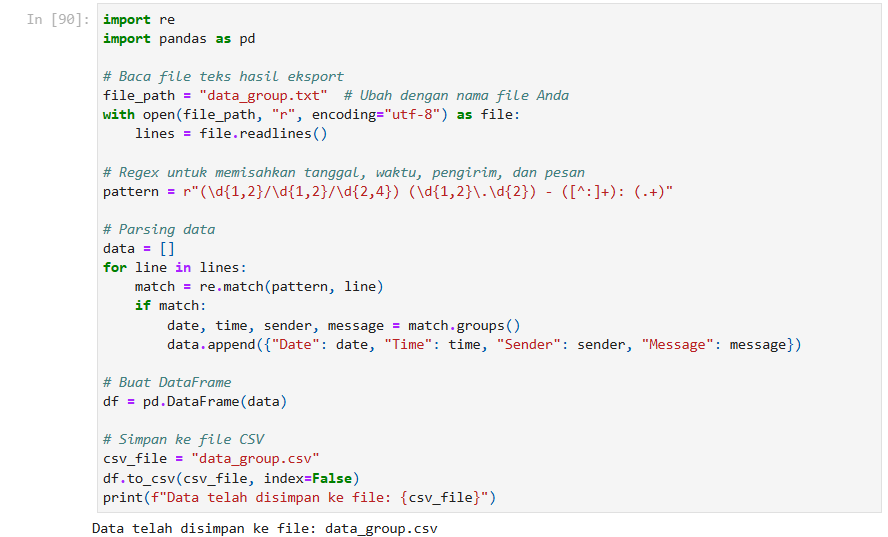
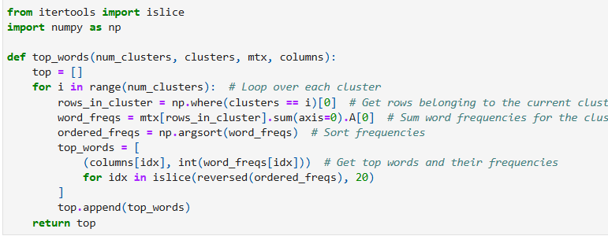
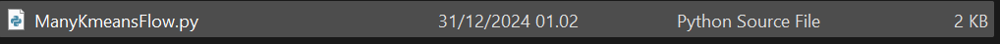

Data Mahasiswa
Fauzan Bayu Samudra
L200220223
IPSD-C
Proses Analisis Menggunakan Jupyter Notebook
- Export konten group WhatsApp menjadi file teks
- Merubah file teks (.txt) menjadi file (.csv) 
- Melakukan kompres file .csv ke dalam .tar
- Melakukan pembersihan data untuk hanya mengambil angka, huruf, dan tanda baca umum dan disimpan kedalam tar
- Melakukan scale data untuk preprocessing dari data didalam tar
- Menyimpan data matrix dalam bentuk CSV ke dalam TAR
- Mendapatkan kata-kata yang paling sering muncul di setiap kluster (top words) 
- Membuat matriks fitur berbasis teks menggunakan CountVectorizer
- Melakukan clustering menggunakan algoritma KMeans
- Menganalisis kluster pesan dan mengidentifikasi tiga kata paling sering muncul
- Hasil Analisis kluster pesan dan mengidentifikasi tiga kata paling sering muncul
Proses Analisis Menggunakan Scale_data.py dan ManyKmeansFlow.py
- Export konten group WhatsApp menjadi file teks
- Merubah file teks (.txt) menjadi file (.csv)
- Melakukan kompres file .csv ke dalam .tar
- Melakukan pembersihan data untuk hanya mengambil angka, huruf, dan tanda baca umum
- Melakukan scale data untuk preprocessing
- Melakukan analysis dengan `analyze_kmeans.py`
- Melakukan metaflow dengan `ManyKmeansFlow.py` 
- Hasil menunjukkan error karena kegagalan AWS